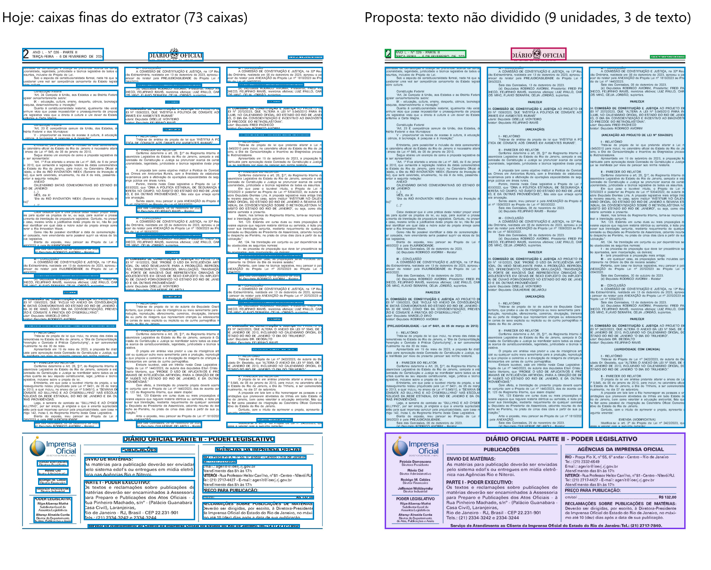
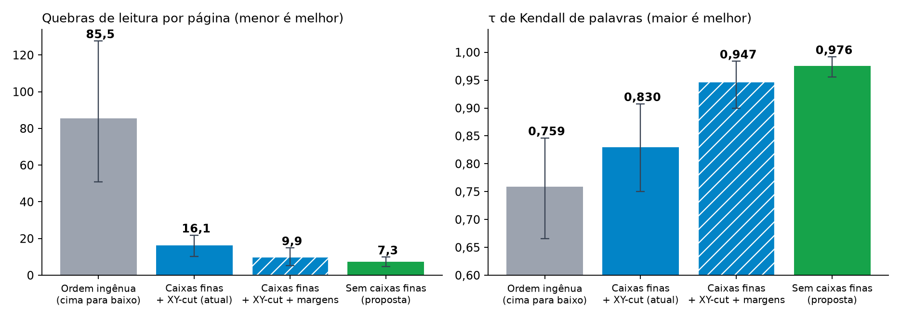
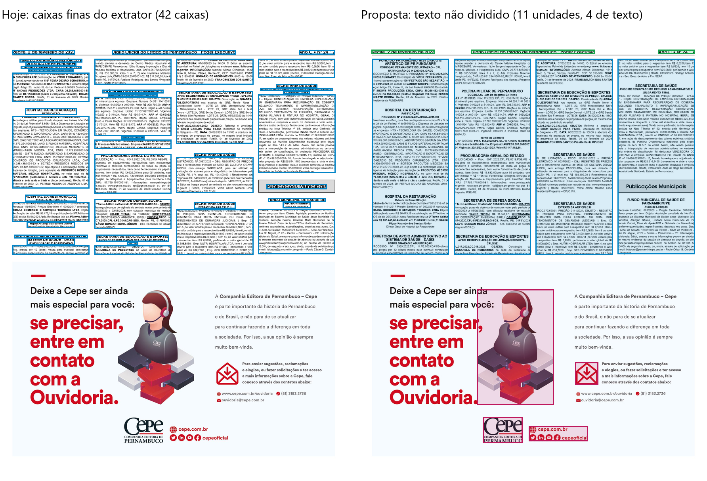

Resultados de 02 a 04/10/2026 · Pedro Alano · TCC INF-UFG · para o Prof. Thierson Couto Rosa
Resumo. Deixar de dividir o texto em caixas de parágrafo (só tabela e imagem viram bloco; o
texto é organizado em colunas) reduziu as quebras de leitura de 16,1 para
7,3 por página nas 71 páginas com ordem anotada. A maior parte desse ganho
(71%) também aparece mantendo as caixas e apenas tratando cabeçalho e rodapé à parte
(9,9 por página); entre essas duas alternativas a diferença ainda não é
estatisticamente clara, mas a proposta quase elimina os erros que nascem dentro das caixas
(213 → 29).
1. A representação
Hoje o extrator divide a página em caixas finas (parágrafos, títulos, assinaturas) e o ordenador decide a sequência
das caixas. Na proposta, apenas tabelas e imagens são detectadas como blocos; o resto do texto fica inteiro e é
organizado em faixas de coluna pelas calhas verticais da página. Cabeçalho, rodapé e quadros institucionais são
separados antes de formar as colunas. Nas 45 páginas do Golden v4 isso troca 1.173 caixas
(26 por página) por 372 unidades (8 por página):
106 faixas de texto, 131 tabelas e imagens, 134 trechos de
cabeçalho ou rodapé e 1 quadro institucional.

Diário Oficial do RJ, Poder Legislativo, 06/02/2024. Nesta página o pipeline com caixas finas entrega
96 quebras de leitura (96 com a política de margens) e a proposta, 51.
textotabelaimagemcabeçalho e rodapéquadro institucional
2. Erros que chegam ao texto final
Comparação entre pipelines totalmente automáticos (nenhum recebe caixa, classe ou ordem humana), em
71 páginas de 27 veículos com ordem de leitura anotada (59.949 palavras).
Quebra de leitura: ponto da saída em que a palavra seguinte não é a palavra seguinte na leitura humana.
Pipeline
Quebras por página
τ de palavras
Sucessor de linhas
Trechos de 12 palavras intactos
Quebras dentro de uma unidade
Ordem ingênua (cima para baixo, esquerda para direita)
85,5
0,759
50,8%
56,2%
—
Caixas finas + XY-cut (pipeline atual)
16,1
0,830
85,7%
87,5%
213
Caixas finas + XY-cut + política de margens
9,9
0,947
91,2%
92,3%
213
Sem caixas finas (proposta)
7,3
0,976
92,1%
94,1%
29

Médias por página com intervalo de 95% (bootstrap por veículo).
Contra o pipeline atual: −8,9 quebras por página [IC 95% −13,1; −4,9],
55% a menos (Wilcoxon por veículo com correção de Holm, p = 0,010). Melhora em
38 páginas, empata em 13 e piora em 20.
Contra o atual com margens: −2,6 quebras por página [IC 95% −5,8; 0,2],
27% a menos na média, mas o intervalo inclui zero (p por veículo = 0,91). A proposta
melhora em 14 páginas, empata em 29 e piora em 28: o ganho médio vem de
poucas páginas densas em que as caixas finas erram muito (as cinco maiores somam 230 quebras a menos, para um saldo
total de 186).
Erros que nenhuma reordenação conserta (já estão dentro de uma caixa ou unidade):
213 no pipeline atual contra 29 na proposta.
De onde vêm as quebras do pipeline atual: das 1.146 quebras, 226
(20%) são associadas às caixas (197 em caixas que fundem dois trechos,
13 em caixas partidas e 16 de ordem dentro da caixa); 442
(39%) somem só com a política de margens, isto é, eram cabeçalho ou rodapé fora do lugar; as
outras 478 (42%) são ordem entre caixas no corpo da página. A regra é conservadora (uma
caixa mal cortada pode gerar um erro contado como de ordem), mas a hipótese de que a maioria das quebras nasce nas
caixas não se confirmou nesta medição. O que as caixas trazem são os erros sem conserto posterior, do item acima.
Separando as páginas: nas 44 usadas no desenvolvimento do método, 16,3
→ 8,9 → 6,0 quebras por
página (atual → com margens → proposta); nas 27 páginas adicionais, 15,9
→ 11,4 → 9,2.
3. Ordenador neural pronto sobre as novas unidades
O LayoutReader pré-treinado, sem retreino, recebeu as unidades embaralhadas das 44 páginas anotadas do
Golden v4: τ de palavras 0,898 com linhas e 0,850 com faixas de coluna. Nas mesmas
páginas a ordenação geométrica por colunas da seção 2 chega a 0,986. O modelo pronto
não ajuda; para testar um ordenador aprendido é preciso treiná-lo nessa representação. A exportação já existe para
614 páginas (349 com evidência de mais de uma coluna),
mas só 44 têm ordem humana.

Diário Oficial de PE, 02/02/2023: página com quatro colunas, anúncio e imagens isoladas como blocos.
4. Extrator treinado no dataset anotado (Label Studio, Data Policy)
Detector de layout treinado nas 1.590 páginas de treino (divisão por fonte; 317 páginas de teste de fontes não
vistas): mAP50 de 0,826 com 3 classes (texto, tabela, imagem) e 0,483 com as 16 classes do
guia. F1 de localização (IoU ≥ 0,5) nas 317 páginas de teste: extrator atual 0,573; detector de 3 classes
0,780 (0,799 com limiar ajustado); extrator novo, que parte do detector e ajusta as caixas às palavras
do PDF, 0,763. Ressalva: nas 11 páginas que anotei do zero com a minha convenção de caixas, o extrator atual
ainda vence (0,851 contra 0,765), porque as duas convenções de anotação diferem.
5. Limitações
44 das 71 páginas foram usadas para desenvolver o método; nas 27 adicionais o ganho é menor.
A referência de palavras deriva da ordem humana das regiões, com ordem geométrica dentro de cada região; não é
uma anotação palavra a palavra.
A separação de colunas ainda produz faixas estreitas indevidas em algumas páginas (exemplo: MG, página 18 do
comparador) e cabeçalhos fragmentados; o quadro institucional só é reconhecido quando tem moldura vetorial no PDF.
A variante com margens e quadros da figura ainda não teve a ordenação medida; os números da seção 2 usam a versão
anterior do mesmo método de colunas.
6. Pontos para decidir
Método principal do TCC: a proposta sem caixas finas, ou caixas finas com política de margens (mais simples e,
por enquanto, estatisticamente equivalente)?
Vale anotar a ordem em mais páginas nessa representação para treinar um ordenador (LayoutLM ou LayoutReader)?
Convenção de caixas do extrator: a do guia do Data Policy (16 classes) ou a que usei no Golden?
Anexo:comparador_golden_v4.html, comparador interativo das 45 páginas em seis
representações (abre direto no navegador, sem instalar nada).
Arquivos de origem dos números:resultados/erros_ponta_a_ponta.json (seção 2);
resultados/estruturas_golden_v4/colunas.jsonl e data/diamond/*/tarefas.jsonl (seção 1);
resultados/datasets_sem_caixas/ (seção 3); resultados/deteccao/ls3_map_teste.json,
ls16_map_teste.json, comparacao_detector_ls.txt e resultados/extrator_v4.md
(seção 4). Gerado por docs/envio_professor_0410/montar.py.